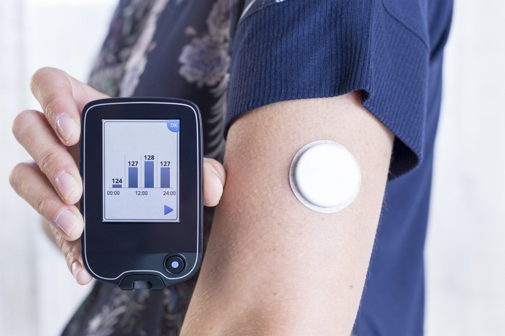
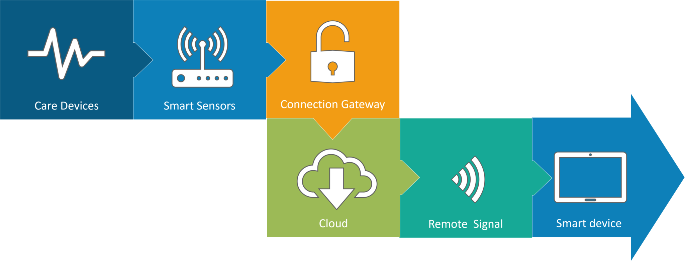
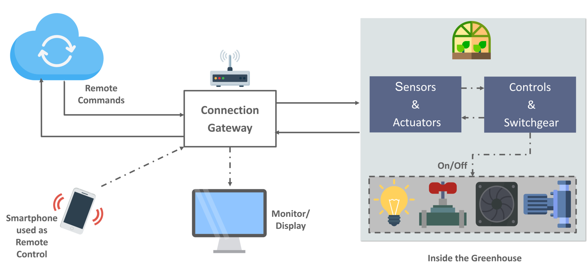

Wearable technology is a cornerstone of IoT applications and is potentially one of the first industries to use the IoT. Everywhere we see these days we see appropriate pieces, heart rate monitors and smartwatches. The Guardian Glucose Monitoring App contains one of the lesser known wearables. The system is being developed to support diabetes sufferers. It measures levels of glucose in the body using a tiny electrode called a glucose sensor positioned under the skin and relays the information to a monitoring system using Radio Frequency.
Smart Homes are probably the first thing we think about when we're talking about IoT Applications. The closest example I can think of here is Jarvis, the Mark Zuckerberg-employed AI home automation. There is also Allen Pan's home automation device where a string of musical notes is used to actuate functions in the room. The video below could give you a better idea.
The resources that current medical research uses, lack critical real-world information. It mostly uses leftover data, controlled environments, and volunteers for medical examination. IoT opens ways to a sea of valuable data through analysis, real-time field data, and testing. The Internet of Things also improves the current devices in power, precision, and availability. IoT focuses on creating systems rather than just equipment.
Estimates predict that by the year 2050 the ever-growing world population will hit almost 10 billion. To feed such a large population, it is important to marry farming to technology and achieve the best results. This area provides various possibilities. Smart Greenhouse is one of those. Through monitoring environmental parameters a greenhouse farming technique improves crop yields. Yet manual handling results in loss of revenue, loss of resources and labor costs, making the process less productive.
A greenhouse with embedded devices not only makes it easier to be monitored but also, enables us to control the climate inside it. Sensors measure different parameters according to the plant requirement and send it to the cloud. It, then, processes the data and applies a control action.
This is one of the areas in which both rapid advances and product consistency are the key factors for a higher return on investment. One could also re-engineer products and their packaging with IoT Applications to provide improved results in both cost and customer experience. IoT here will prove to be game changing in its arsenal, with solutions for all the following domains.
1-Factory Digitalization
2-Product flow Monitoring
3-Inventory Management
4-Safety and Security
5-Quality Control
6-Packaging optimization
7-Logistics and Supply Chain Optimization